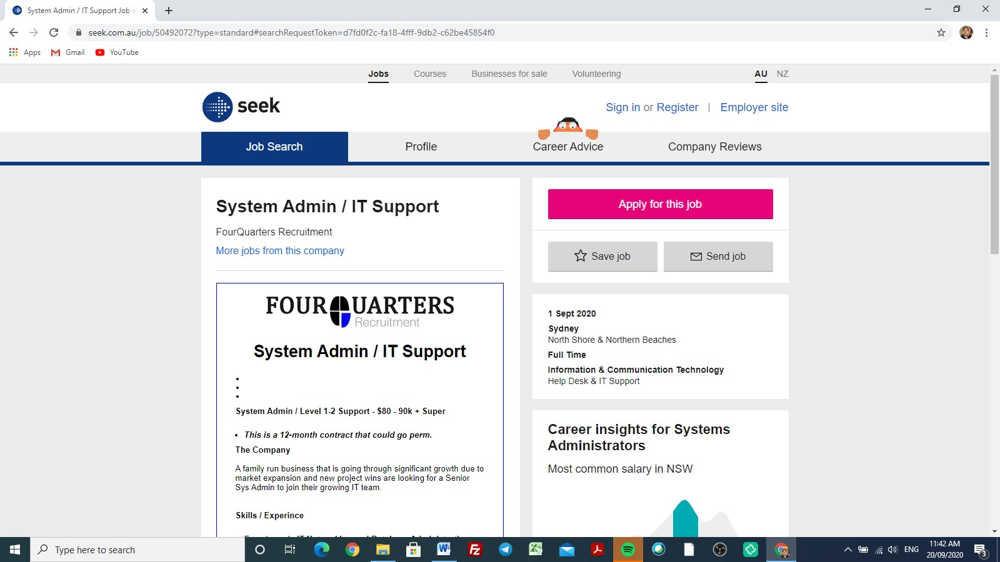
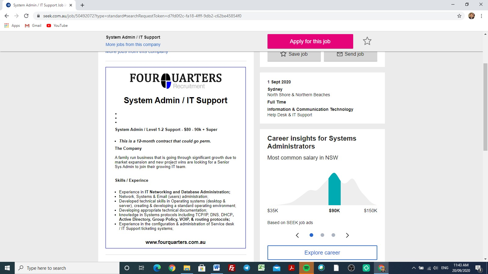

TechBoys
Smart Macayan
s3875106
s3875106@student.rmit.edu.au
I’m 20 years old, I’m Filipino, I’m around 5 ft. 7 inches (around 173cm) and I’m born on the 3rd of December 1999 at Davao City, Philippines.
31/08/2020
I speak two main languages, which are Tagalog and English, and I used to speak one of the dialects in the Philippines, which is Visaya when I was around eight, but completely forgot it as soon as I arrived in Australia in 2010. Nowadays, I’m learning Korean, Bahasa (Indonesia), and a bit of Japanese.
My hobbies and interest include basketball, music (mainly Korean rap/rnb, indie, neo soul, and modern/old school rap and rnb), going to aesthetically pleasing food places that are good, watching Korean drama, and computer games (mainly MMORPG like League of Legends). Also, I resell clothes and shoes from sites that include Grailed, Depop, StockX and etc. Also, I mainly develop and shoot 35mm film shots of my inspirations and captured moments from particular concepts (e.g. watching my NBA team winning a championship in the arena, or music videos of my favourite artists).
I’m a reserved person at first, which means that I’m like a “one you get to know me” type of person. Because of this, I shy away from meeting new people but once you get to know me, I’m more lively and energetic than you’d expect. Also, I make everyone feel with ease. Also, I’m in a church choir that sings bass as their assigned voice type and I’m a son of a pastor of a local Filipino church. Lastly, I like dogs and Japanese hedgehogs nowadays because I find them cute.
In terms of our overall effort in A2, I think we did well as a group even if it only consists of two members, including me. There were undermanned circumstances, work, and personal and family commitments that affected the assignment in terms of the components that were done, what needs to be done, better communication, pull requests in the GitHub repository, and setting up meetings via MS Teams but we pulled through and finished it on time. Also, in some of the components from A2 like ideal jobs, team profile and project idea, there will be no changes that will be made. However, time will tell if there will be adjustments that need to be made for the other components that I didn’t mention.
SEEK: System Admin/IT Support, from FourQuarters Recruitment located at:
https://www.seek.com.au/job/50492072?type=standard#searchRequestToken=d7fd 0f2c-fa18-4fff-9db2-c62be45854f0


The position is a system admin, IT support offered by FourQuarters Recruitment. This tackles the networking aspect of IT (IT Networking and Database Administration). This position is appealing due to the skills that I’ll learn throughout the whole duration of this course that I’m currently taking such as developing technical skills in terms of operating systems that include desktop and server, creating an excellent operating environment, the development of appropriate technical documentation, and the experience in terms of administering the service desk and IT support ticketing systems.
The skills that are required for this position include general networking skills that include monitoring an entire network in a workplace, establishing the network security and the administration of various network standards for users such as permissions and access levels. Also, general baseline skills that are required include problem solving, organisational skills, communication skills, teamwork/collaboration, troubleshooting, research, resourcefulness, enthusiasm, creativity, analytical skills, and project management. Also, the IT-specific skills that will be needed include technical support and LINUX, which refers to an open-source operating system that is widely used that receives requests from programs and it also relays the requests to a computer’s hardware (Opensource.com 2019). Lastly, the qualifications needed for this position include either a degree in Bachelor of Information Technology, Major Networking & Security, a degree in Bachelor of Computer Science, or a degree in Bachelor of Information Technology (Honours). Also, some potential employers are required to go further mandatory training if it involves wanting to become a system admin to specialise in a particular area.
Currently, the skills and experiences that I’ll gain are from a unit called Introduction to Information Technology (COSC2196). Lastly, I don’t have any current qualifications related to IT.
To possess such skills, you must have the basic skills that are expected from IT professionals that include problem solving, organisational skills, communication skills, teamwork/collaboration, troubleshooting, research, resourcefulness, enthusiasm, creativity, analytical skills, and project management. Also, the most important one that will mostly land you this job includes technical skills that will vary from job to job such as training; hands-on experiences like volunteering or doing side work from your computer.
Also, the recommended qualifications that are needed for a successful employment is finishing a degree in Bachelor of Information Technology, Major Networking & Security, a degree in Bachelor of Computer Science, and the other alternative is a degree in Bachelor of Information Technology (Honours). Lastly, the experiences needed or this job include IT Networking and Database Administration, the development of technical skills in terms of operating systems that include desktop and server, creating an excellent overall operating environment, and the development of appropriate technical documentation knowledge in Systems protocols that include TCP/IP, DNS, DHCP, Group Policy, VOIP, Active Directory and routing protocols.
My job consists of tackling the networking aspect of IT that includes creating an excellent operating environment, operating systems such as server and desktop, developing appropriate technical documentation and the experience in carrying out the service desk and IT support ticketing systems, as expected from a system admin in IT support. For Edward, his job consists of helping other individuals in terms of experience and developing a social culture that will result in a successful working environment. Also, it consists of financial marketing and actuarial experience.
For my position/job, there’s only one common element, which is a benefit that includes a 12 month contract that could go permanent. For Edward’s position, there are also benefits that include collaborating and working with like-minded individuals with an ambitious spirit in a working environment, the remuneration is applied through a combination of fixed salary and gaining access to get an equity exposure in the business, and an occurring development and education will be supported by the business.
In my opinion, the noticeable differences between my position and Edward’s position are the roles and the aspects of the jobs that we focus on for the benefit and improvement of the working environment and overall success. I’m a system admin in IT support, which mainly focuses on the networking aspect of IT such as developing technical skills in terms of operating systems that include desktop and server, creating an excellent overall operating environment, and the development of appropriate technical documentation knowledge in Systems protocols that include TCP/IP, DNS, DHCP, Group Policy, VOIP, Active Directory and routing protocols.
Lastly, Edward’s position is an investment adviser in Equities and Derivatives, which mainly focuses on financial markets, which includes a familiarity with topics that are correlated to Australian equity markets, and progress in qualifications that include the CFP/CFA/Master of Finance.
In terms of similarity, there are some similarities for me and Edward’s career plans due to the degree of difficulty of our career paths that we chose for ourselves. For being a system administrator, it requires a particular person, dedication, experience, and integrity. Sometimes, being a system admin will take you around the years of working up the ladder to become a good system admin. For being an investment adviser, it’s included as one of the highest stress rates in the industry. Starting this career can result in a great deal of stress, as this career is deeply associated with the performance of global and domestic markets. Lastly, investment advisers are managing the client’s emotions constantly during the downturns in the market that can result in a high level of stress over time.
In terms of differences, there are some noticeable ones from our career paths chosen that include a completely different field, study, and requirements that will be needed for a potential employment. For example, for being a system admin in IT support, completing the course of Bachelor of Information Technology, Major in Networking & Security is needed, or a degree in Bachelor of Information Technology (Honours) as an alternative whereas being an investment advisor, completing the RG146 Training Course via an undergraduate degree in Financial Planning, and series of examinations that is split in three parts of your study is needed to be a qualified Actuary by being recognised by the Institute of Actuarial Studies.